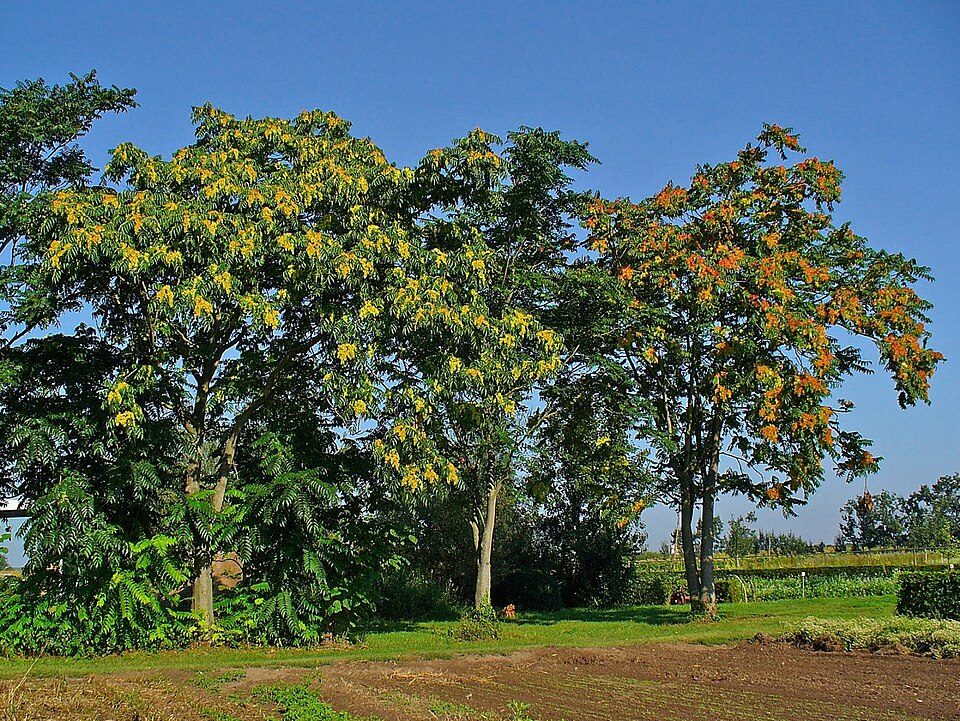

Ailanthus — Tree of Heaven (Ailanthus)
A shameless, unstoppable invader from China who cracks concrete with its roots, poisons the soil around itself, and stinks of victory — because it always comes back no matter what you do to it.
Combat flavor
Fast growth and surprisingly dense, hard wood makes Ailanthus a deceptive Juggernaut: quick to arrive, heavy in impact, and nearly impossible to eradicate. Allelopathy naturally becomes a ground-denial aura that debuffs or damages enemies standing near its roots.
Real-world facts
Typical / max height17–27 m; reaches 15 m in only 25 years
Lifespan50 years individual stems; clonal thickets persist far longer via resprouting
Wood~600 kg/m³ air-dry (37.1 lb/ft³); Janka hardness ~6 300 N (1 420 lbf) — surprisingly hard and heavy for a fast-growing tree
Growth speedFast (one of the fastest-growing trees in the temperate world)
Ecology / notable traitsAllelopathic — exudes ailanthone from roots and bark that suppresses germination of competing plants; rated among the worst invasive species in Europe and North America; tolerates compacted, polluted, and nutrient-poor soils; grows through asphalt and concrete; profuse seed production (up to 350 000 seeds/tree/yr); foliage and male flowers produce a nauseating odour; native to northeast China and Taiwan
World raritycommon (invasive cosmopolitan)
Gallery
